Orquestração com Dagster
O METRA utiliza o Dagster para coordenar a ingestão, a extração para Parquet e a transformação dbt-duckdb. A integração foi validada com Dagster 1.13.28, dagster-dbt 0.29.28 e dbt 1.12.6.
Visão Geral
O Dagster organiza o fluxo de dados como um grafo de assets:
PostgreSQL / oltp
↓
executar_pipeline
↓
exportar_parquet
↓
lake/* (cinco sources Parquet virtuais)
↓
Silver (stg_*)
↓
Gold (dim_* e fct_*)
Na interface, o grafo completo aparece com as dependências entre as etapas Python, os sources do lake e os modelos Silver e Gold:

Figura 1 — Grafo de assets na UI do Dagster. Os sources lake/* são virtuais (representam os arquivos Parquet produzidos pela extração e não uma segunda materialização).
A decisão arquitetural da equipe está registrada na ADR 0006. Além disso, a integração é definida em dagster_metra/definitions.py, e os dois assets Python são implementados em dagster_metra/assets.py.
Responsabilidade de cada Asset
| Asset/grupo | Responsabilidade | Materialização |
|---|---|---|
executar_pipeline |
Executar migrações, cargas Bronze e promoção para o OLTP 3FN | Atualiza o PostgreSQL |
exportar_parquet |
Extrair o OLTP para o lake Parquet particionado | Atualiza data/lake/parquet/ |
lake/* |
Representar no grafo os cinco sources Parquet do dbt | Virtual (não escreve arquivos) |
stg_* |
Limpar, padronizar e cruzar os Parquets | dbt build no DuckDB, schema silver |
dim_* e fct_* |
Disponibilizar dimensões, fato detalhada e agregados Gold | dbt build no DuckDB, schema gold |
Os cinco sources são movimentacao, municipio, cbo_2002, cnae_subclasse e cnae_secao. Cada spec virtual recebe exportar_parquet como dependência adicional; as demais dependências entre sources, Silver e Gold vêm do manifesto dbt.
Execução Local
Instale as dependências do pipeline e certifique-se de que o PostgreSQL e os arquivos de dados estejam disponíveis conforme o README do projeto:
python -m pip install -r requirements-pipeline.txt
dagster definitions validate -w workspace.yaml
dagster dev -w workspace.yaml
Acesse http://localhost:3000. O workspace.yaml carrega dagster_metra.definitions. Em desenvolvimento, DbtProject.prepare_if_dev() prepara o manifesto quando necessário; por isso, dbt_metra/target/manifest.json é um artefato local e não deve ser versionado.
Recomenda-se seguir a seguinte ordem na UI:
1. Materialize executar_pipeline para aplicar migrações, carregar Bronze e atualizar o OLTP.
2. Materialize exportar_parquet para gerar ou atualizar os cinco conjuntos Parquet.
3. Materialize os assets dbt (default) para executar dbt build sobre o lake e publicar Silver/Gold no DuckDB.
4. Inspecione os eventos, testes e materializações antes de liberar o banco para consultas ou consumo.
O grafo expressa a ordem, mas não transforma os sources virtuais em arquivos: a etapa que escreve os Parquets é exportar_parquet.
Execução com Docker Compose
O serviço do Dagster usa Python 3.12, prepara o manifesto durante a construção da imagem e compartilha o mesmo volume dagster_home entre webserver e daemon:
Acesse http://localhost:3000. O Compose fornece ao Dagster:
PGHOST=postgrese as demais variáveis de conexão com o PostgreSQL;METRA_LAKE_PARQUET=/app/data/lake/parquet;METRA_DUCKDB=/app/data/metra_analitico.duckdb;DAGSTER_HOME=/opt/dagster/dagster_home.
O webserver atende à interface e o daemon executa os jobs enviados por ela. Para parar os serviços:
Manifesto dbt e Caminhos
O Dagster lê dbt_metra/target/manifest.json. Em um clone novo, o manifesto pode ser preparado pelo Dagster em modo de desenvolvimento; na imagem Docker, o Dockerfile executa dbt parse durante o build. Se os modelos, sources ou dependências do dbt forem alterados, regenere o manifesto antes de validar o grafo.
Os caminhos padrão são:
| Variável | Desenvolvimento local | Container |
|---|---|---|
METRA_LAKE_PARQUET |
dbt_metra/../data/lake/parquet |
/app/data/lake/parquet |
METRA_DUCKDB |
data/metra_analitico.duckdb |
/app/data/metra_analitico.duckdb |
Use caminhos absolutos ao apontar para outro lake ou banco. O diretório pai do DuckDB deve existir. O banco e os Parquets devem estar montados no mesmo ambiente em que o asset é executado.
Qualidade e Operação
O asset dbt executa dbt build, portanto modelos e testes são processados em ordem de dependência. Uma falha de teste ou modelo impede considerar a materialização pronta, mas o Dagster não publica automaticamente um novo DuckDB de forma transacional. Por isso:
- não libere o banco para consumo enquanto a execução estiver incompleta;
- investigue falhas de schema, unicidade, integridade referencial, domínio e distribuição na documentação da camada analítica;
- evite duas escritas concorrentes no mesmo arquivo DuckDB;
- associe
manifest.json,run_results.json, commit e lote aos artefatos de execução quando houver CI ou operação automatizada; - trate os limites de distribuição temporal como alertas operacionais, não como prova isolada de qualidade estatística.
O Dagster coordena e observa o pipeline; ele não substitui os contratos dbt nem a validação de negócio descrita na ADR 0005.
Validação e Diagnóstico
Na raiz do repositório:
Para verificar a camada analítica independentemente da origem PostgreSQL, execute a suíte com Parquet sintético:
Se o grafo não carregar, verifique primeiro o manifesto, o caminho do projeto dbt_metra/, as variáveis METRA_DUCKDB e METRA_LAKE_PARQUET e a disponibilidade do interpretador que instalou dagster e dbt. Se o job falhar após carregar o grafo, consulte o evento do asset correspondente: erro em executar_pipeline indica a origem PostgreSQL; erro em exportar_parquet indica a extração; erro nos assets dbt (default) indica o lake, o DuckDB ou os testes/modelos dbt.